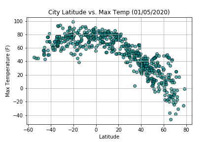

Plot 3: City Latitude vs. Max Temperature

Description:
From the Latitude vs. Max Temperature plot we can see there is a strong relationship between the two variables. The max temperature reaches a peak around 0 degrees latitude and then start to decrease. This is to be expected as all the cities below the equator are experiencing summer seasons while cities above the equator are experiencing winter seasons. Furthermore as we approach the equator, temperatures tend to stabalize more and have a smaller degree of variation. This is visible from the plot between -20 and 20 degrees latitude where all the data points are almost all within the same range.
Visualizations